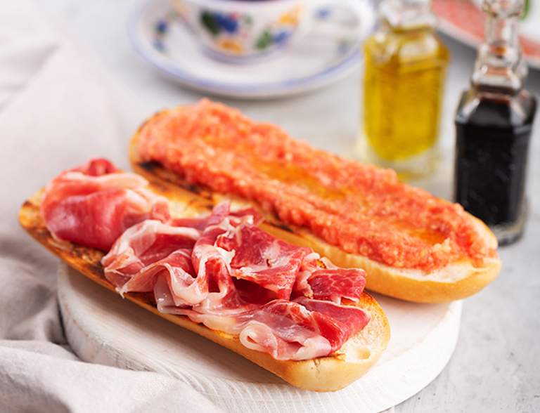

Cultura Española
Descubre los sabores auténticos de la cocina tradicional española

Tortilla de Patatas

Churros con Chocolate

Paella

Descubre los sabores auténticos de la cocina tradicional española